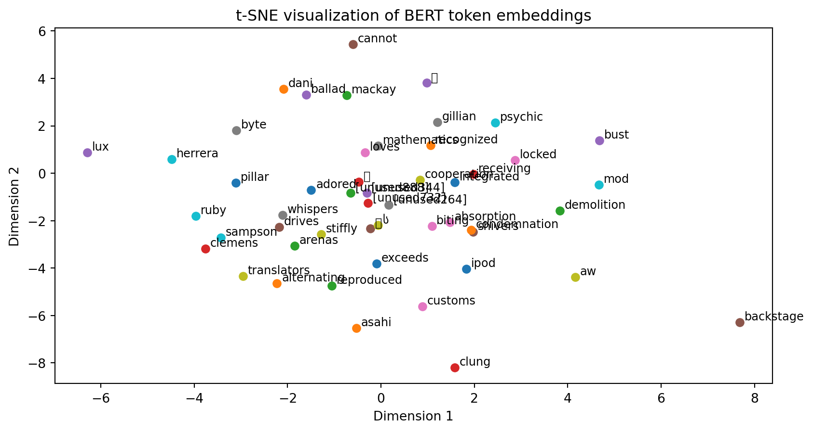

Embeddings, NLP, and LLMs
Introducing new packages from OpenAI and Hugging Face
API keys tab and create a keyOPENAI_API_KEY to this value (see here)- An embedding is a vector representation of data in a lower-dimensional space that captures semantic relationships and features, often used in machine learning and natural language processing to represent words, sentences, or images.
- In neural networks, embeddings are learned during training and help improve model performance by allowing algorithms to understand complex relationships in the data more efficiently.completion = client.chat.completions.create(model="gpt-4o-mini",
messages=[
{
"role": "system",
"content": "You provide 2 short bullet points, technical answers."
},
{
"role": "user",
"content": "What is an embedding?"
},
{
"role": "assistant",
"content": "- An embedding is a dense vector representation of objects, such as words, sentences, or images, that captures semantic meanings and relationships in a continuous vector space.\n- It transforms high-dimensional data into a lower-dimensional format while preserving essential properties, enabling easier computation in machine learning tasks."
},
{
"role": "user","content": "What is the relationship to latent spaces?"
},
]
)
print(completion.choices[0].message.content)- Latent spaces are the abstract, lower-dimensional spaces where embeddings reside, representing underlying factors or features that summarize the data's essential characteristics.
- Both embeddings and latent spaces facilitate the mapping of complex data into a more manageable form, allowing for pattern recognition and dimensionality reduction in machine learning models.assistant)\[ g(f(x; \theta_e); \theta_d) \approx x \]
If we had a distribution for \(x\) then can solve
\[ \min_{\theta_e, \theta_d} \mathbb{E}_{x\sim \mu^*}||g(f(x; \theta_e); \theta_d) - x||_2^2 \]
Fit with ERM for \(\mathcal{D} \sim \mu^*\)
\[ \min_{\theta_e, \theta_d} \frac{1}{|\mathcal{D}|} \sum_{x \in \mathcal{D}} ||g(f(x; \theta_e); \theta_d) - x||_2^2 \]
\[ \min_{W} \frac{1}{N} \sum_{n=1}^N ||W \overbrace{W^T x_n}^{z_n = f(x_n;W)} - x_n||_2^2,\quad \text{with } W^T W = I \]
['hello', ',', 'hugging', 'face']
[7592, 1010, 17662, 2227]model = AutoModel.from_pretrained("bert-base-uncased")
def get_embedding(sentence):
tokens = tokenizer(sentence, return_tensors="pt")
with torch.no_grad():
outputs = model(**tokens)
embeddings = outputs.last_hidden_state
# will see there are 3 total tokens, only middle is the sentence
return outputs.last_hidden_state[0,1:-1,:].squeeze()
embed = get_embedding("hello")
print(embed.shape)torch.Size([768])embed_bank = get_embedding("bank")
embed_banks = get_embedding("banks")
embed_river = get_embedding("river")
embed_money = get_embedding("money")
print(f"sim(bank, banks) = {cosine_similarity(embed_bank, embed_banks, dim=0)}")
print(f"sim(bank, river) = {cosine_similarity(embed_bank, embed_river, dim=0)}")
print(f"sim(bank, money) = {cosine_similarity(embed_bank, embed_money, dim=0)}")
print(f"sim(river, money) = {cosine_similarity(embed_river, embed_money, dim=0)}")sim(bank, banks) = 0.743811845779419
sim(bank, river) = 0.5635619163513184
sim(bank, money) = 0.6932224035263062
sim(river, money) = 0.5209330916404724bert-base-uncased is a model which can predict missing words as its “supervised” goal, \(f(x) = \hat{f}(\phi(x))\)def get_openai_embedding(sentence):
response = client.embeddings.create(input = [sentence], model="text-embedding-3-large")
return torch.tensor(response.data[0].embedding)
embed_bank = get_openai_embedding("bank")
embed_banks = get_openai_embedding("banks")
embed_river = get_openai_embedding("river")
embed_money = get_openai_embedding("money")
print(f"sim(bank, banks) = {cosine_similarity(embed_bank, embed_banks, dim=0)}")
print(f"sim(bank, river) = {cosine_similarity(embed_bank, embed_river, dim=0)}")
print(f"sim(bank, money) = {cosine_similarity(embed_bank, embed_money, dim=0)}")
print(f"sim(river, money) = {cosine_similarity(embed_river, embed_money, dim=0)}")sim(bank, banks) = 0.77836674451828
sim(bank, river) = 0.42693987488746643
sim(bank, money) = 0.43935537338256836
sim(river, money) = 0.3745850920677185e_1 = get_embedding("The man bites the dog").mean(dim=0)
e_2 = get_embedding("The dog chased the man").mean(dim=0)
e_3 = get_embedding("The man was chased by the dog").mean(dim=0)
print(f"sim(e_1, e_2) = {cosine_similarity(e_1, e_2, dim=0)}")
print(f"sim(e_1, e_3) = {cosine_similarity(e_1, e_3, dim=0)}")
print(f"sim(e_2, e_3) = {cosine_similarity(e_2, e_3, dim=0)}")sim(e_1, e_2) = 0.8429715037345886
sim(e_1, e_3) = 0.8270692229270935
sim(e_2, e_3) = 0.9152544736862183e_1 = get_openai_embedding("The man bites the dog")
e_2 = get_openai_embedding("The dog chased the man")
e_3 = get_openai_embedding("The man was chased by the dog")
print(f"sim(e_1, e_2) = {cosine_similarity(e_1, e_2, dim=0)}")
print(f"sim(e_1, e_3) = {cosine_similarity(e_1, e_3, dim=0)}")
print(f"sim(e_2, e_3) = {cosine_similarity(e_2, e_3, dim=0)}")sim(e_1, e_2) = 0.5413377285003662
sim(e_1, e_3) = 0.5225532054901123
sim(e_2, e_3) = 0.7911417484283447e_1 = get_openai_embedding("The man bites the dog")
e_2 = get_openai_embedding("The dog chased the man")
e_3 = get_openai_embedding("The man was chased by the dog")
e_4 = get_openai_embedding("The man chased the dog")
print(f"sim(e_1, e_2) = {cosine_similarity(e_1, e_2, dim=0)}")
print(f"sim(e_1, e_3) = {cosine_similarity(e_1, e_3, dim=0)}")
print(f"sim(e_2, e_3) = {cosine_similarity(e_2, e_3, dim=0)}")
print(f"sim(e_3, e_4) = {cosine_similarity(e_3, e_4, dim=0)}")sim(e_1, e_2) = 0.5414578914642334
sim(e_1, e_3) = 0.5226542353630066
sim(e_2, e_3) = 0.7911672592163086
sim(e_3, e_4) = 0.8598114848136902sim(e_3, e_4) > sim(e_3, e_2) even though they they seem to have the exact opposite meaning!vocab = tokenizer.get_vocab()
tokens = list(vocab.keys())
print(f"model has {len(tokens)} tokens")
special_tokens = ['##', '[MASK]', '[CLS]', '[SEP]', '[PAD]']
full_tokens = [token for token in tokens if not token.startswith('##') and token not in special_tokens]
print(f"model has {len(full_tokens)} full tokens (e.g. not special symbols, special tokens, etc.)")
sampled_tokens = np.random.choice(full_tokens, size=50, replace=False)
token_ids = [vocab[token] for token in sampled_tokens]
with torch.no_grad():
embeddings = model.embeddings.word_embeddings(torch.tensor(token_ids))model has 30522 tokens
model has 24690 full tokens (e.g. not special symbols, special tokens, etc.)tsne = TSNE(n_components=2, random_state=0) # approx with 2 dim embedding
embeddings_2d = tsne.fit_transform(embeddings.numpy())
# Plot the t-SNE results
plt.figure()
for i, token in enumerate(sampled_tokens):
x, y = embeddings_2d[i]
plt.scatter(x, y)
plt.text(x+0.1, y+0.1, token, fontsize=9)
plt.title('t-SNE visualization of BERT token embeddings')
plt.xlabel('Dimension 1')
plt.ylabel('Dimension 2')
plt.show()
dimensionsclient = OpenAI()
completion = client.chat.completions.create(
model="gpt-4o-mini",
temperature=0.7, # higher temperature adds "entropy"
messages=[
{
"role": "system",
"content": "You provide 2 short bullet points, technical answers."
},
{
"role": "user",
"content": "What is an embedding?"
}
]
)
print(completion.choices[0].message.content)- An embedding is a mathematical representation of data in a lower-dimensional space that captures its semantic meaning, often used in natural language processing and machine learning.
- It allows for the conversion of categorical data, such as words or items, into dense vector formats that facilitate similarity computations and downstream tasks like classification or clustering.completion = client.chat.completions.create(model="gpt-4o-mini",
messages=[
{
"role": "system",
"content": "You provide 2 short bullet points, technical answers."
},
{
"role": "user",
"content": "What is an embedding?"
},
{
"role": "assistant",
"content": "- An embedding is a dense vector representation of objects, such as words, sentences, or images, that captures semantic meanings and relationships in a continuous vector space.\n- It transforms high-dimensional data into a lower-dimensional format while preserving essential properties, enabling easier computation in machine learning tasks."
},
{
"role": "user","content": "What is the relationship to latent spaces?"
},
]
)
print(completion.choices[0].message.content)- Embeddings are often used to represent data points within a latent space, where similar points are closer together, allowing for effective clustering and dimensionality reduction.
- Latent spaces capture the underlying structure of the data, and embeddings serve as coordinates within these spaces, facilitating tasks like prediction and anomaly detection.pipeline function in Hugging Face is a simple way to use prebuilt models for common tasks. See the pipeline tutorialdistilbert/distilbert-base-uncased-finetuned-sst-2-englishprint(classifier("Transformers library is great."))
print(classifier("Transformers library is awful."))
print(classifier("I am ok with the transformers."))
print(classifier("Transformers are a toy from the 80s."))
print(classifier("The chicken crossed the road."))[{'label': 'POSITIVE', 'score': 0.9998424053192139}]
[{'label': 'NEGATIVE', 'score': 0.9997472167015076}]
[{'label': 'POSITIVE', 'score': 0.9997096657752991}]
[{'label': 'POSITIVE', 'score': 0.9587399363517761}]
[{'label': 'NEGATIVE', 'score': 0.845471978187561}]toy from the 80s overwhelmingly positive, and chicken crossed the road moderately negative?[MASK] token[{'score': 0.04227157309651375,
'token': 3291,
'token_str': 'problem',
'sequence': 'this is a simple problem.'},
{'score': 0.03105001524090767,
'token': 3160,
'token_str': 'question',
'sequence': 'this is a simple question.'},
{'score': 0.029722511768341064,
'token': 8522,
'token_str': 'equation',
'sequence': 'this is a simple equation.'}]